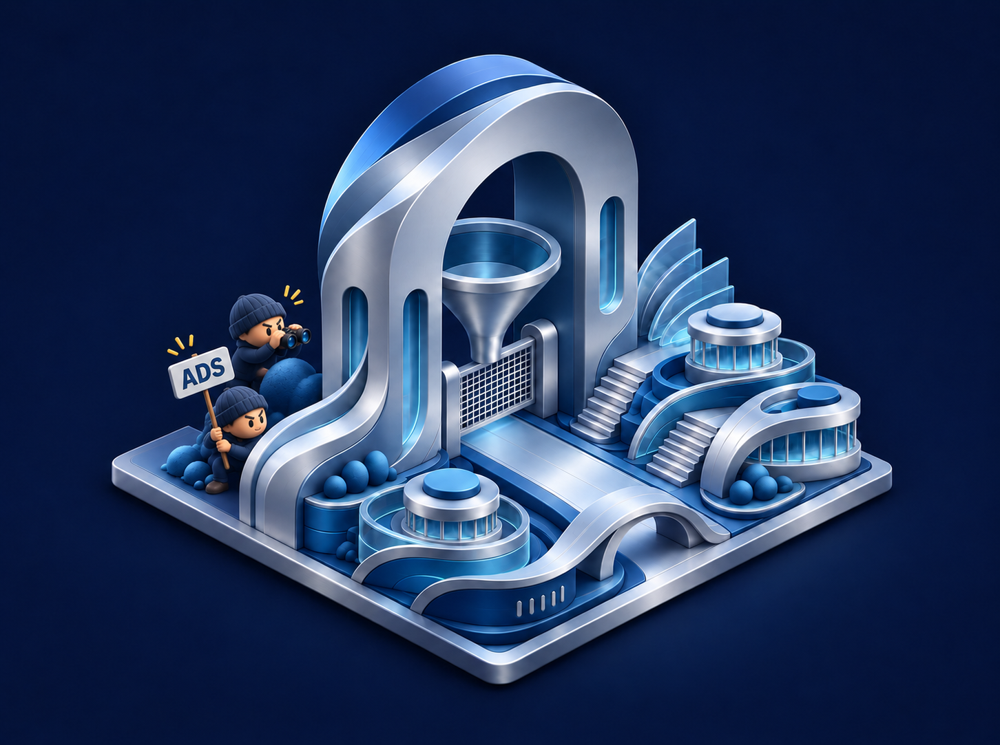
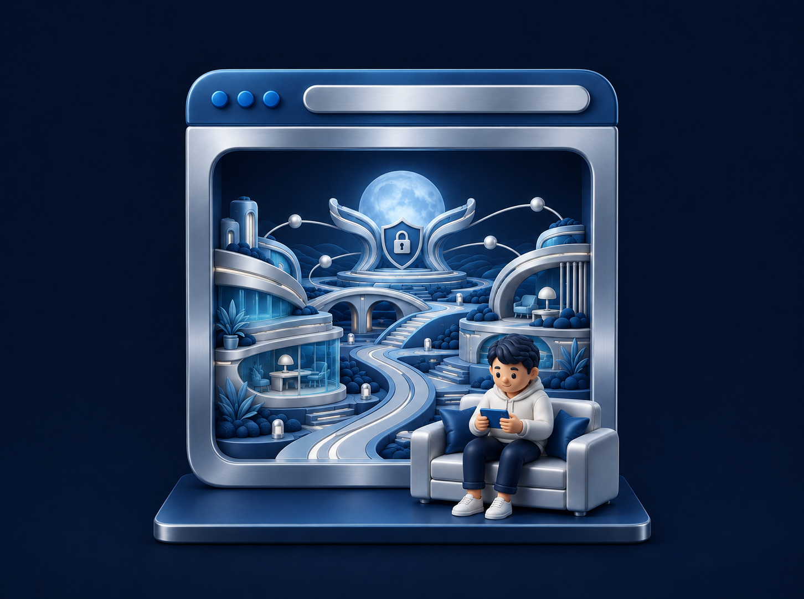
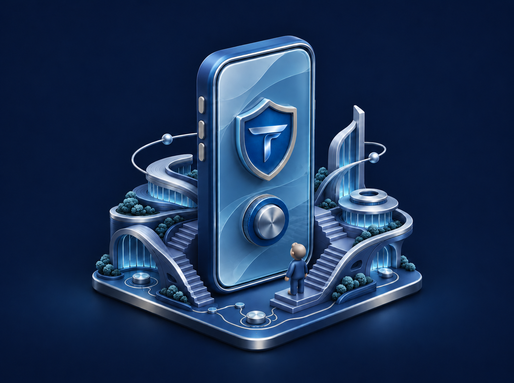

Privacy isn’t an add-on. It is the starting point.
TIAN is built around a clear division of trust: separating where you connect from and where you are going, so no single point holds the complete picture.
DUAL-SHIELD PROTECTIONSEPARATED BY DESIGN
01 / ENTRY SHIELD
The identity side.
Connecting IP
Protected at entry
Browsing destination
Kept private from this shield
02 / EXIT SHIELD
The destination side.
Destination connections
Handled cleanly onward
Your personal IP
Never visible to this shield
HOW IT WORKS FOR YOUWhen you connect with TIAN, the Identity Shield protects your personal IP address at the door while the Destination Shield connects you onward to the web. Each shield performs its dedicated role without holding both pieces of your digital life.
01 / THE IDENTITY SHIELD
Where you connect. Protected from the start.
The Identity Shield receives your connection and masks your personal IP address at the point of entry—without visibility into the websites or services you visit.
Your personal IP address stops here and never reaches your destination.
Refined protection and effortless controls—crafted to feel natural, fast, and quietly confident every day.

01 / INTELLIGENT FILTERING
Keep the good. Leave the noise behind.
Built-in domain filtering blocks known advertising, tracking, and malicious hosts before they load—giving you a cleaner, quieter connection across your apps.
Protected DNS · Ad Filtering · Tracker & Threat Blocking

02 / A CALMER BROWSER
Your pages. With fewer distractions.
Streamlined web browsing with integrated tracker and clutter protection—hiding intrusive noise so articles, apps, and sites feel fast and effortless on every device.
Clean page rendering designed for speed.

03 / LUXURY PRECISION
One tap. Instant peace of mind.
A tactile, modern interface that makes advanced privacy feel simple. Connect in a tap, choose your region, and see your protection status at a glance.
Designed for clarity across iPhone, Android, Windows & Mac.
ZERO BROWSING LOGS · CLEAR COMMITMENTS
What’s yours stays yours.
TIAN never logs your browsing history, traffic content, or DNS queries, and never sells user data. Our privacy policy explains our commitments in plain language.